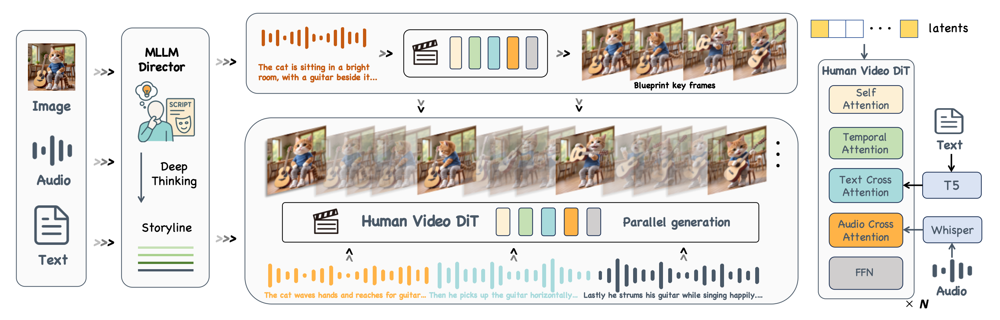

Kling-Avatar: Grounding Multimodal Instructions for Cascaded Long-Duration Avatar Animation Synthesis
Yikang Ding*, Jiwen Liu*, Wenyuan Zhang, Zekun Wang, Wentao Hu, Liyuan Cui, Mingming Lao, Yingchao Shao, Hui Liu, Xiaohan Li, Ming Chen, Xiaoqiang Liu, Yu-Shen Liu, Pengfei Wan *Equal contribution Kling Team, Kuaishou TechnologyHigh-Quality Videos with Accurate Lip–Audio Alignment
Multimodal Instruction Control
Long-Duration Video Generation
Generalization to Open Scenarios
Pipeline

An MLLM Director first interprets multimodal instructions into high-level semantics and tells a storyline. Guided by this global planning, the first stage generates a blueprint video. In the second stage, keyframes are extracted from the blueprint and used as first–last frame conditions for parallel sub-clip generation, refining local details and dynamics to synthesize long-duration videos.
Acknowledgement
Some materials in this project are provided by Kling AI Creative Partner (OrctonAI @OrctonAI, Flyover Base @FlyoverBase, Hideyuki Ashizawa @h_ashizawaJP, Eric Ker @EricKerArt, WuxIA Rocks @WuxiaRocks, ρŁ𝐀𝔰Ｍʘ @plasm0, Edwin Zeng @doogyhatts, SEIIIRU @seiiiiiiiiiiru, fAIkout @fAIkout, The AI Filmmaking Advantage @iampauldonis, Karoline Georges @KarolineGeorges). We sincerely thank them for their creativity and kind authorization.
Responsible Use Statement
The images and audios presented in these demos are either sourced from public domains or generated by our models. They are intended solely for showcasing the capabilities of our research framework—particularly, how it produces corresponding expressions and motions in response to diverse inputs, highlighting the framework’s technical strengths and academic value.If you have any concerns regarding the content, please feel free to contact us at liujiwen@kuaishou.com, and we will promptly remove the material if necessary.
BibTeX
@article{ding2025kling-avatar,
title={Kling-Avatar: Grounding Multimodal Instructions for Cascaded Long-Duration Avatar Animation Synthesis},
author={Ding, Yikang and Liu, Jiwen and Zhang, Wenyuan and Wang, Zekun and Hu, Wentao and Cui, Liyuan and Lao, Mingming and Shao, Yingchao and Liu, Hui and Li, Xiaohan and Chen, Ming and Liu, Xiaoqiang and Liu, Yu-shen and Wan, Pengfei},
journal={arXiv preprint arXiv:2509.09595},
year={2025}
}